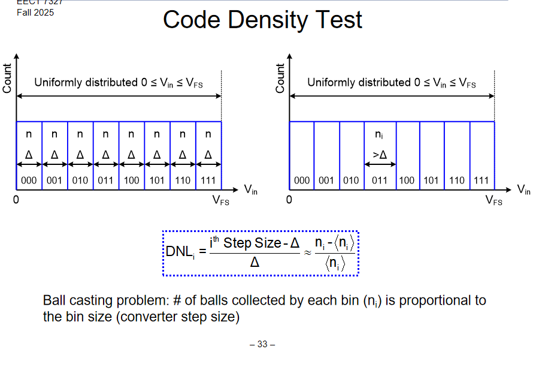

test1

$I_{D}=\frac{1}{2}\mu_nC_{ox}\frac{W}{L}(V_{gs}-V_{th})^2$
这是一个测试markdown文件
test1_1
SSSSS
test2
| P | V | T |
|---|---|---|
| 1 | 2 | 3 |
| 4 | 5 | 6 |
$$ A_v=G_mR_{out} \\ A=\frac{a}{1+af} $$
this is a test for multiple h1 titles
test 3
TTTT
test 3_1
KKKK
量化噪声的能量功率为 $$ P_{noise}=\frac{1}{q}\int^{\frac{q}{2}}_{-\frac{q}{2}}x^2dx=\frac{LSB^2}{12} $$
信号的能量功率为 $$ P_{signal}=\left(\frac{FS}{2\sqrt{2}}\right)^2=\left(\frac{2^N\cdot LSB}{2\sqrt{2}}\right)^2 $$ 则信噪比为 $$ SNR=10log_{10}\frac{P_{signal}}{P_{noise}}=6.02\times N+1.76dB $$ 还有一种写法的SNR： $$ SNR=6.02\times N+1.76dB+10log_{10}\frac{f_s}{2\cdot BW} $$